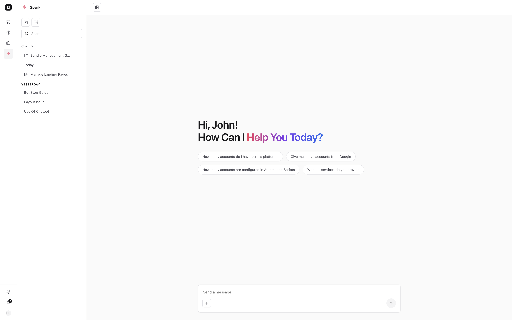
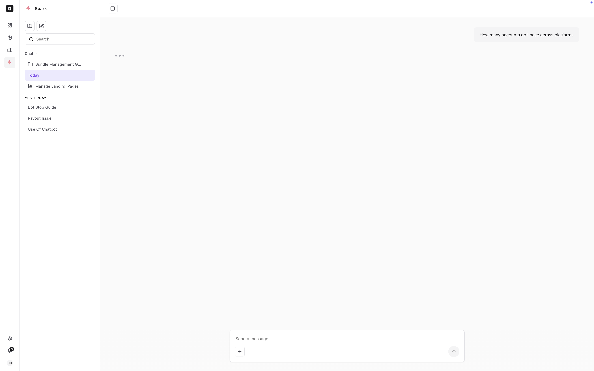
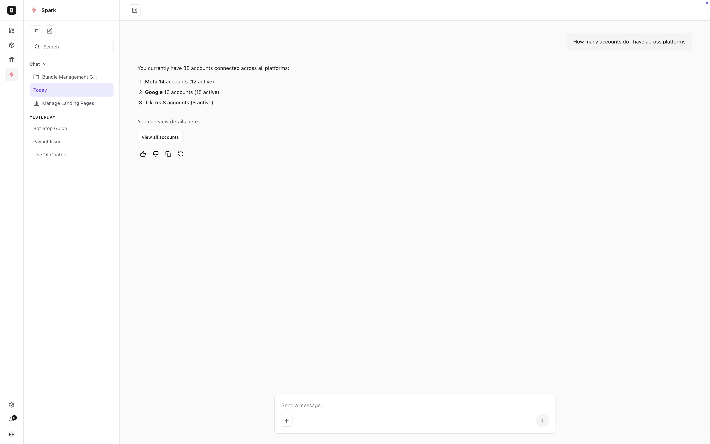
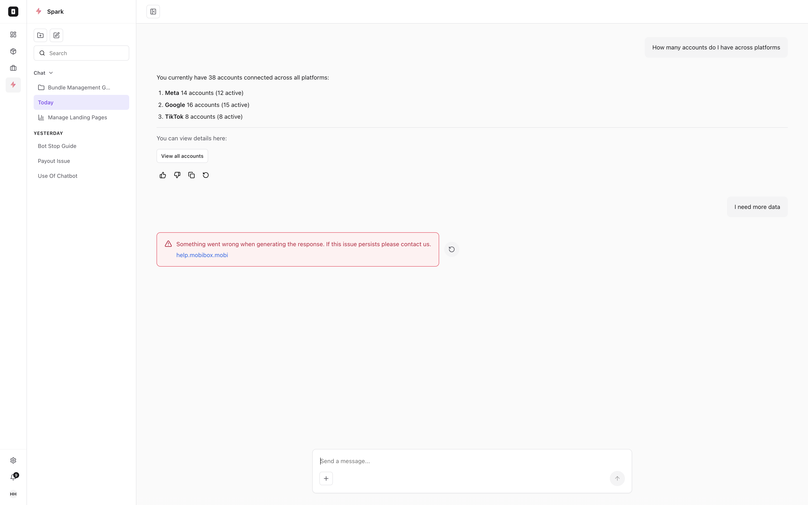

Spark: an AI agent inside a data-heavy platform
Spark is the built-in AI agent for MobiBox, a Direct Carrier Billing platform. It lets the marketers who run the platform query performance, surface anomalies, and act on services in plain language instead of digging through dashboards. The core design problem was trust: an AI answer is only useful if the marketer believes it.

Spark welcome state: a focused entry point with suggested queries, opened as a tab in the MobiBox nav with its own chat-history sub-sidebar.
The data was there. Getting to it wasn't.
MobiBox is the platform marketers use to run subscription services for telecom operators and content publishers: payouts, capacity limits, market performance, campaign CTR across Meta, Google, and TikTok. But answering a simple question, how many accounts are active on Google, or which campaign is dragging down CTR, meant knowing exactly which dashboard to open and how to read it.
Spark closes that gap. Marketers ask in plain language and get an answer, a source, and a way to act, without leaving the conversation. My mandate was to design that agent so it fit natively inside a dense B2B tool and, more importantly, so marketers would trust what it told them.
"An AI answer that the marketer has to second-guess is worse than no answer. It has to be verifiable, or it won't get used."
Designing for trust, not just answers.
A consumer chatbot can be conversational and a little loose. An AI agent inside a platform that moves real money cannot. Operators act on what Spark says, so the design had to make every answer checkable, make it obvious when Spark was certain versus working, and never leave a dead end when something failed.
That reframed the work from "build a chat UI" to three concrete interaction problems: how an answer earns trust, when Spark answers inline versus routing you to a screen, and how failure is handled without breaking the marketer's flow.
Three calls that made Spark trustworthy.
Answer first, then the receipts
Every response leads with the answer, the number or the list the marketer actually asked for, then backs it with a "Data Sources" section that names the dashboards behind it and deep-links to each. The marketer gets a fast answer and a one-click path to verify it. The AI never asks to be taken on faith.
Answer inline, or hand off to the right screen
Not every request should be answered in chat. Simple lookups (counts, CTR highlights) resolve inline. Anything that needs the full surface, managing the accounts, drilling into a campaign, ends with a clear action button that drops the marketer onto the exact screen. Spark is a fast lane to the platform, not a replacement for it.
Failure that recovers, never a dead end
When a response can't be generated, Spark shows a plain-language error, a support link, and a one-click retry, rather than a spinner that never resolves or a blank reply. A retried query returns a deeper analysis, so the recovery path adds value instead of just repeating itself.

Thinking state: the query posts immediately, then a typing indicator signals Spark is working, so the marketer is never left guessing.

Sourced answer: the response leads with the number, then offers a deep-link to view the underlying accounts.

Graceful failure: a clear error with a support link and a one-click retry. The marketer's flow is preserved, and a retry returns a deeper analysis.
Grounded in how marketers actually work.
The design started from the questions marketers already asked support and each other, the recurring "how many," "which one," and "why is this down" queries that mapped directly to dashboards they found hard to navigate. Those became Spark's suggested prompts and shaped the answer-plus-source pattern. Flows and interaction states were reviewed with the MobiBox product and engineering team to confirm the agent fit the platform's existing surfaces and data, not a separate silo.
An AI surface that belongs in the product.
Spark turns a dense, multi-dashboard platform into something a marketer can simply ask. The trust-first pattern, answer, source, deep-link, means the agent accelerates work without asking anyone to take its word on faith, and the graceful-failure handling keeps it dependable enough to live inside a tool that moves real revenue.
Designed as part of the broader MobiBox redesign, Spark shares its design system and visual language, so it reads as a native part of the platform rather than a bolted-on chatbot.